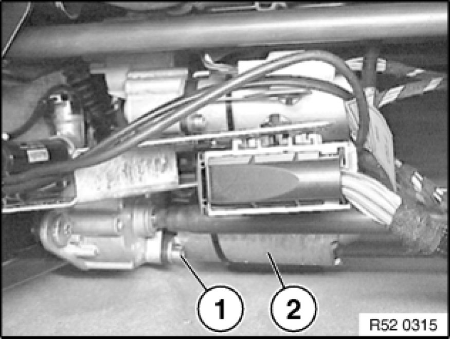
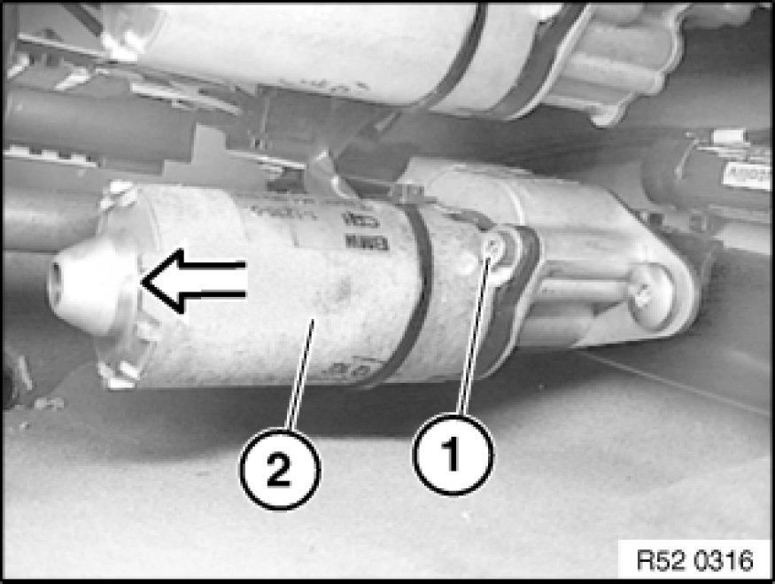
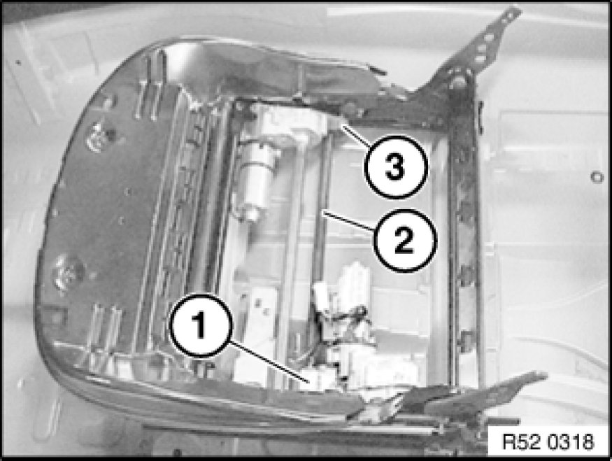
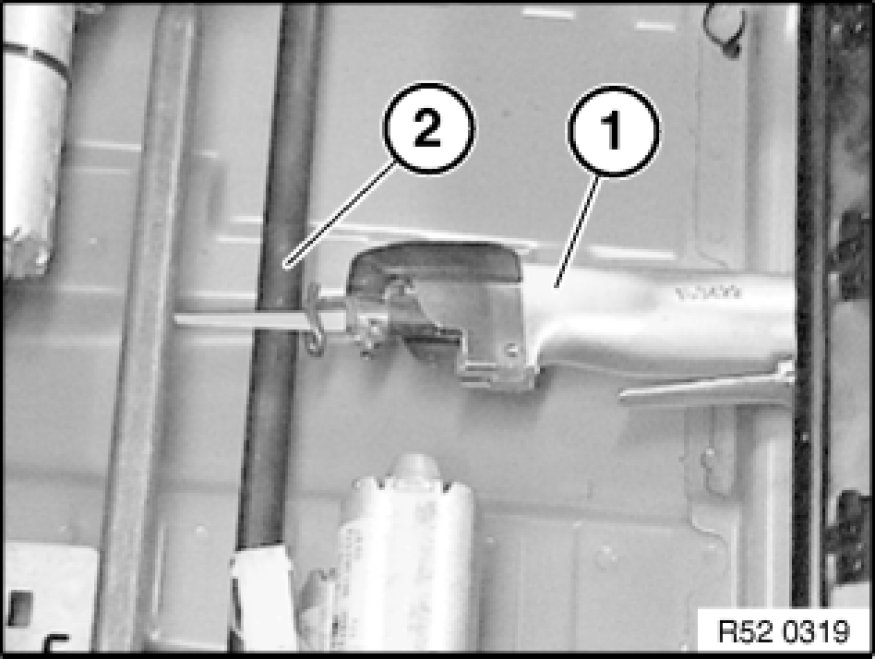
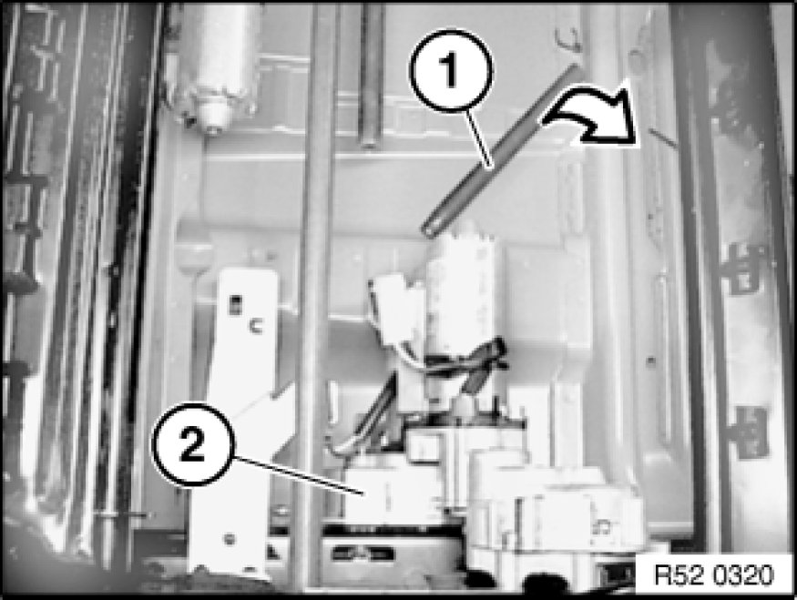
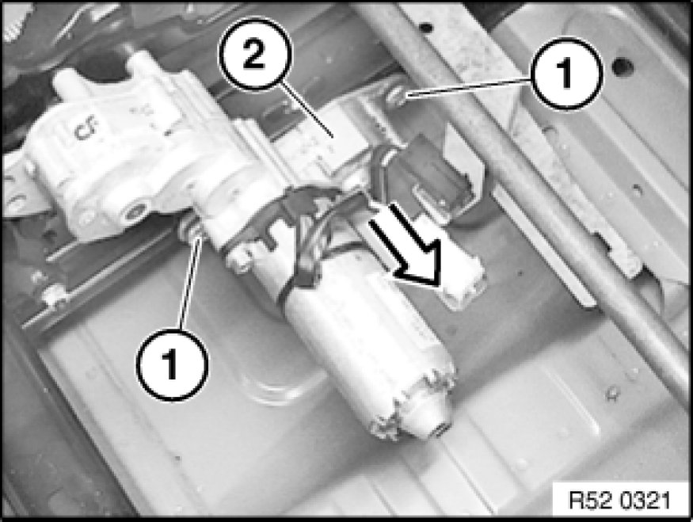
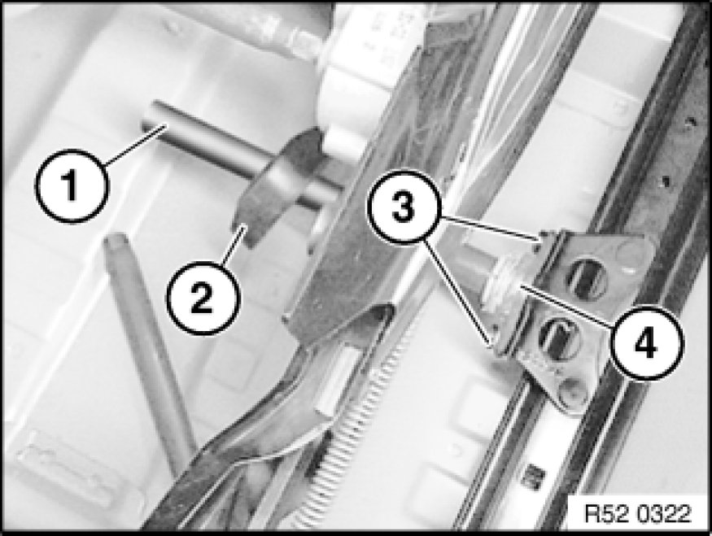

Additional Work (Normal/ Electric) with Defective Drive for Longitudinal Adjustment
52 14 899 - Additional work (normal/electric) with defective drive for longitudinal adjustment
Set seat tilt adjustment to max. up setting.

Release screw (1) on actuator drive (2) of longitudinal seat adjustment.

Release screw (1) on servodrive (2) of longitudinal seat adjustment and remove servodrive (2).
Activate the operating switch for the seat position adjustment:
(A) - No function:
- Disconnect plug for longitudinal seat adjustment
- Connect new servodrive and check function
- If servodrive is running, gear is O.K.
- Reassemble front seat
(B) - Actuator drive running:
- Transmission for longitudinal seat adjustment defective!
- Continue with
Disassembly of faulty gear for longitudinal seat adjustment

Disassembly of faulty gear (1) for
longitudinal seat adjustment:
Note:
For purposes of clarity, the backrest frame and seat cover are shown removed.
(2) - Input shaft
(3) - Internal gear

Using a pneumatic saw (1),
cut through drive shaft (2) from rear.

Remove drive shaft (1) from gear (2).

Release screw (1) and remove gear (2).

Over rest of drive shaft (1),
adjust front seat,
release screws on floor panel
and remove front seat.
Note:
If gear (4) is faulty,
detach cover (2),
release screws (3),
and remove gear (4).

Replace seat mechanism on front seat.